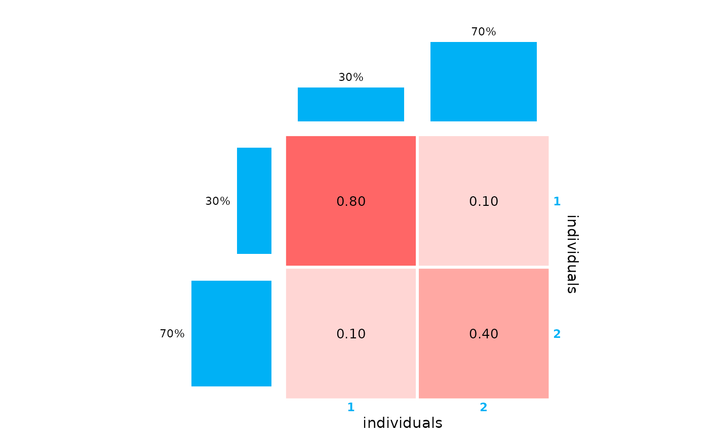
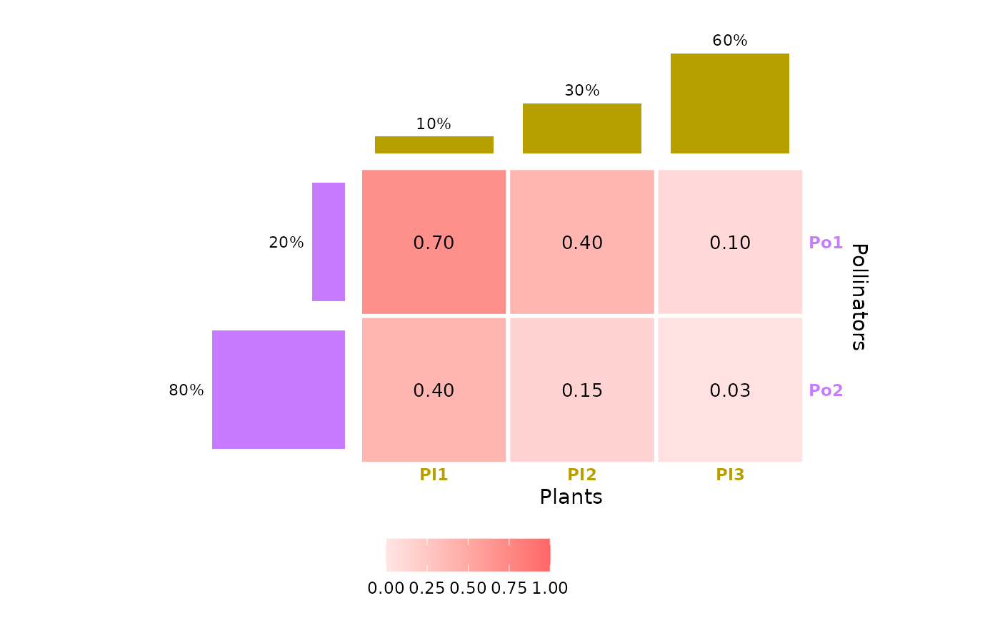
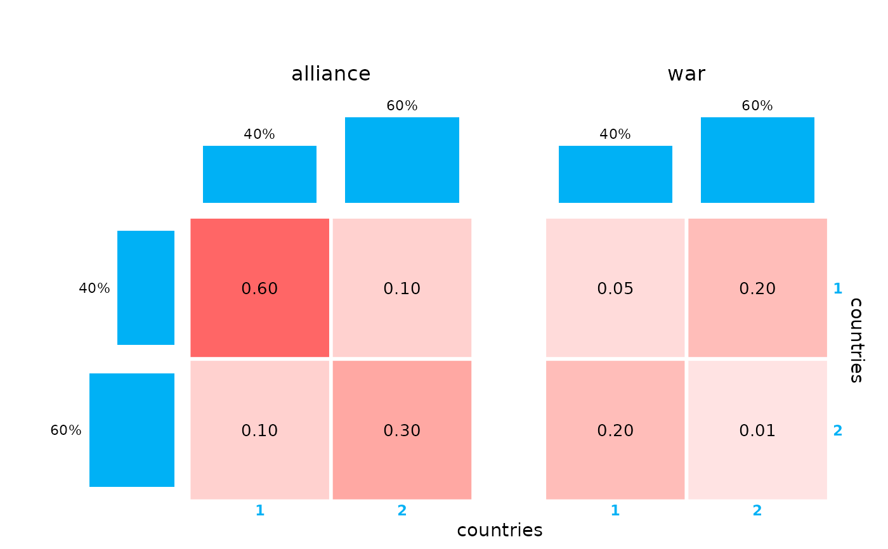
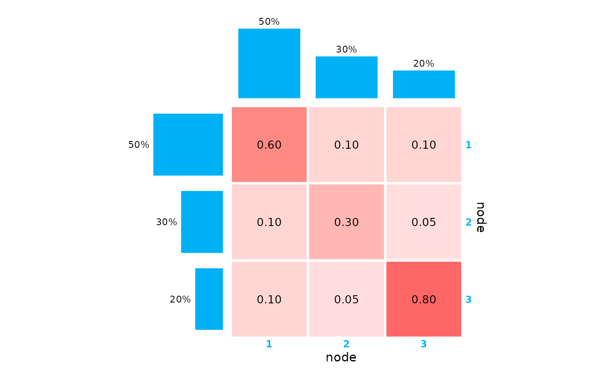

Draws the connectivity matrix of a simple or bipartite SBM as a heat map, one cell per pair of blocks with its value, and the block proportions as bars on the side: the proportions of the row blocks on the left, those of the column blocks on top.
Arguments
- connectParam
: a matrix of connectivity parameters (one row per row block, one column per column block), or a list with a
meanelement as given by$connectParamof an SBM object, or a list of such matrices (one per layer of a multiplex network)- blockProp
: the block proportions. A vector for a simple SBM, a list of two vectors (row and col) for a bipartite SBM
- dimLabels
: a vector of length 1 or 2 specifying the types of nodes in row and col (functional group)
- plotOptions
: a list providing options. See details below.
Details
Contrary to the graphon (plotMyGraphon), where the blocks are
sized by their proportions, all the cells have the same size: the connectivities of the small
blocks remain readable, and the proportions are given by the bars. The cells are drawn
with the colors of the graphon.
For an SBM object (sampled or estimated), plot(x, type = 'parameters') gives the same plot.
For a multiplex SBM, connectParam is a list of connectivity matrices (one per layer, named by the
layers): the heat maps of the layers are drawn side by side, each one with the proportions of the column
blocks on top, the proportions of the row blocks being drawn once on the left.
The list of parameters plotOptions for the parameters plot is
"legend", "legend.title", "legend.position", "title": as for the graphon. The legend is not drawn by default
"block.color", "blockAlpha.min", "blockAlpha.max", "limits": colors of the connectivities, as for the graphon
"values": Boolean. Print the value of the connectivity in each cell. Default value is TRUE
"values.digits": Number of digits of the values. Default value is 2
"values.size": Size of the values. Default value is 3.5
"bar.color": Colors of the bars (and of the labels of the blocks), one per type of nodes (row, col). Default values are the colors of the mesoscopic view
"bar.size": Length of the longest bar, as a fraction of the largest side of the matrix. Default value is 0.3
"bar.max": Proportion corresponding to the longest bar. Default value is NULL: the largest proportion. Set it to 1 to compare several plots
"bar.labels": Boolean. Print the proportions (in percent) at the end of the bars. Default value is TRUE
"labels.size": Size of the labels of the bars. Default value is 3
"vertex.label.name": Prefix of the labels of the blocks, one per type of nodes. Default value is NULL: the number of the block for a simple SBM, the shortest prefixes of the labels of the dimensions which distinguish them for a bipartite SBM
Examples
## simple SBM
plotMyParameters(matrix(c(0.8, 0.1, 0.1, 0.4), 2, 2), blockProp = c(0.3, 0.7),
dimLabels = 'individuals')

## bipartite SBM
plotMyParameters(matrix(c(0.7, 0.4, 0.1, 0.4, 0.15, 0.03), 2, 3, byrow = TRUE),
blockProp = list(row = c(0.2, 0.8), col = c(0.1, 0.3, 0.6)),
dimLabels = c(row = 'Pollinators', col = 'Plants'),
plotOptions = list(legend = TRUE, limits = c(0, 1)))

## multiplex SBM: one heat map per layer
plotMyParameters(list(alliance = matrix(c(0.6, 0.1, 0.1, 0.3), 2, 2),
war = matrix(c(0.05, 0.2, 0.2, 0.01), 2, 2)),
blockProp = c(0.4, 0.6), dimLabels = 'countries')

## from an SBM object
mySampler <- sampleSimpleSBM(nbNodes = 60, blockProp = c(0.5, 0.3, 0.2),
connectParam = list(mean = matrix(c(0.6, 0.1, 0.1,
0.1, 0.3, 0.05,
0.1, 0.05, 0.8), 3, 3)))
plot(mySampler, type = 'parameters')
